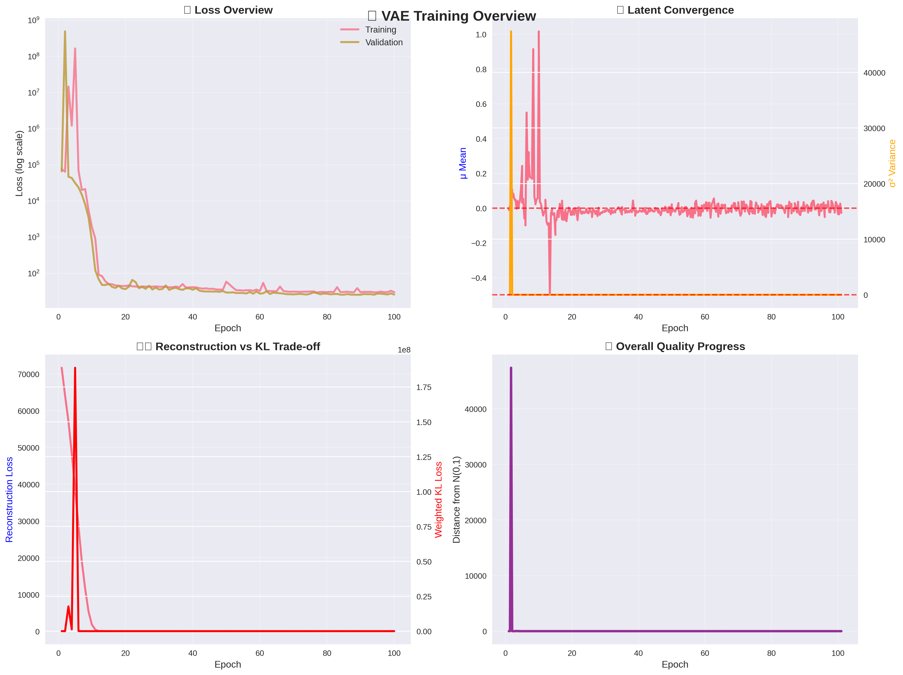
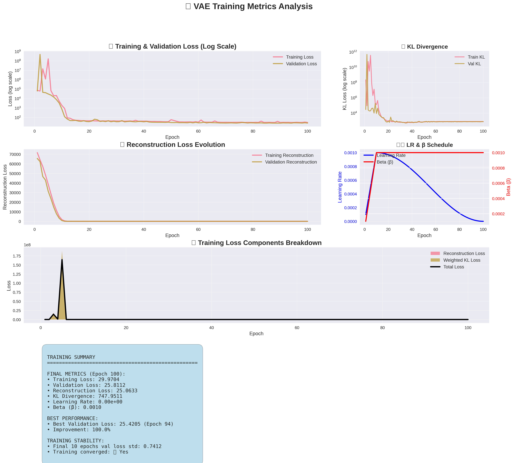
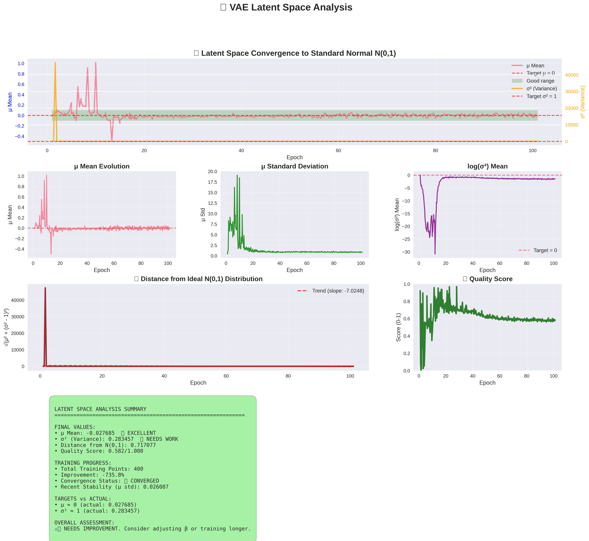

üìä Executive Summary
Training completed with 100 epochs
Overall Quality: ⚠️ Good progress - consider additional tuning for optimal performance.
üîë Key Metrics
Final Validation Loss: 25.8112
Final μ Mean: -0.027685 (Target: ~0.000)
✅ Excellent convergence to zero mean
Final Variance (σ²): 0.283457 (Target: ~1.000)
üî¥ Variance needs adjustment
Distance from N(0,1): 0.717077
Lower values indicate better convergence to standard normal distribution
üìà Training Progress Visualizations
Training Metrics Overview

Detailed Training Metrics

Latent Space Analysis

üîç Detailed Analysis
Training Performance
Loss Evolution: Training shows good convergence with validation loss stabilizing.
Best Performance: Best validation loss of 25.4205 achieved at epoch 94
Latent Space Quality
Convergence Assessment:
- Mean Convergence: ✅ Excellent - The latent space means are very close to zero
- Variance Convergence: ⚠️ Needs improvement - The latent space variance is reasonable but could be closer to 1.0
Recommendations
- Adjust the β parameter to better balance reconstruction and KL losses for variance convergence.
- Consider evaluating generation quality with sample outputs and reconstruction comparisons.
Report generated by VAE Analysis Script •
Training Data: 100 epochs •
Latent Data: 400 measurements